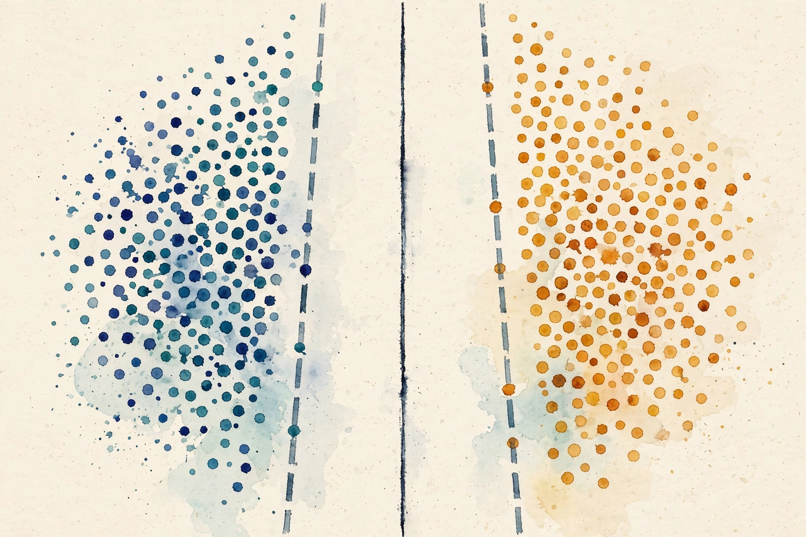

Narrated from the lesson document · no lecture transcript exists
A line, a probability, a margin. This companion walks the full arc of Unit 06: ordinary least squares, its probabilistic face, logistic regression, softmax, GLMs, kernel feature maps, Gram matrices, hard and soft margins, the SVM dual, subgradient optimization, conditioning, and model choice.
From the lesson The idea, and every number beside it, comes from the cited section of the lesson file lessons/u06/lesson-06-linear-models-kernels-margins.md. The phrasing is the companion's.
Illustration Invented by the companion: an analogy, a toy with made-up values, or a what-if. Never lesson content.
companion Companion voice: the idea above the tag is from the lesson. The generalization below it is the companion's.
Provenance: the lesson is locally authored. It does not reproduce an instructor lecture, and it carries no transcript. All claim classes are lesson-local.

Section 1 · C01
From the lessonC01
The computed example, 2026-10-06. XᵀX = [[4, 6], [6, 14]], determinant 20, inverse [[0.7, -0.3], [-0.3, 0.2]]. Xᵀy = [6, 13]. w_hat = [0.3, 0.8]. Predictions [0.3, 1.1, 1.9, 2.7]. Residuals [-0.3, -0.1, 1.1, -0.7]. RSS 1.8. One claim: the line minimizes RSS. The pink segments are the residuals.
w_hat = [0.3, 0.8] solves XᵀXw = Xᵀy. Geometrically, the fitted values are the shadow of y on the column space of X.
Section 2 · C02
From the lessonC02
sigma²_hat = RSS / n = 1.8 / 4 = 0.45. Max log-likelihood -4.0787. The predictive variance at x = 5 is sigma²(1 + x_*ᵀ(XᵀX)⁻¹x_*) = 1.665. The 1 is the new noise. The second term is the parameter doubt, growing with distance from the data. Computed 2026-10-06.
From the lessonC02
The lesson's moral: least squares is maximum likelihood under Gaussian noise. The same w_hat, a new story about uncertainty.
Section 3 · C03
From the lessonC03
At w = 0: p = [0.5, 0.5], log-likelihood -1.3863. Gradient = mean((p - y)x) = -0.25. One step with eta = 1: w = 0.25. New p = [0.5, 0.562177]. New log-likelihood -1.2691. The likelihood rose. One claim: the step lifts the likelihood. Computed 2026-10-06.
| w | p | log-likelihood |
|---|---|---|
| 0 | [0.5, 0.5] | -1.3863 |
| 0.25 | [0.5, 0.562177] | -1.2691 |
Section 4 · C04
From the lessonC04
Shifted z = [0, -1, -2]. Exponentials: [1, 0.367879, 0.135335]. Sum 1.503214. p = [0.665241, 0.244728, 0.090031]. Sum 1.0 up to 2e-16. Cross-entropy for class 0: -log(0.665241) = 0.407606. Computed 2026-10-06. The shift by the max keeps the exponentials finite. The probabilities do not care.
From the lessonC04 Softmax bench: enter three logits. The widget shifts, exponentiates, and normalizes with the lesson's recipe.
z1: z2: z3:
Recipe: subtract the max, exponentiate, divide by the sum.
Section 5 · C05
From the lessonC05
logit(0.7) = log(0.7/0.3) = 0.847298. sigmoid(0.847298) = 0.7. Round trip exact to float precision. Computed 2026-10-06. The link function translates between probability space and linear-predictor space. The inverse link translates back.
Section 6 · C06
From the lessonC06
phi(2)·phi(3) = 43, not 49. The naive map [1, x, x²] misses a cross term. The corrected map phi2(x) = [1, sqrt(2)x, x²] gives 1 + 2·6 + 36 = 49. Match. Computed 2026-10-06. The kernel (1 + 2·3)² = 49 computes the corrected dot product without ever building the map.
From the lessonC06 Kernel bench: enter a and b. The widget compares the naive dot product against (1 + ab)².
a: b:
Naive phi dot vs (1 + ab)². At a = 2, b = 3: 43 vs 49.
phi(2)·phi(3) = 43 misses. (1 + 2·3)² = 49 hits. The kernel computes the right dot product in the original coordinates.
Section 7 · C07
From the lessonC07
K = [[1, 0.606531, 0.135335], [0.606531, 1, 0.082085], [0.135335, 0.082085, 1]]. Eigenvalues 0.391064, 0.965601, 1.643335. All positive. PSD confirmed. Computed 2026-10-06. One claim: the matrix is PSD. A kernel whose Gram matrix is not PSD is not a kernel.
| Eigenvalue | Sign |
|---|---|
| 0.391064 | positive |
| 0.965601 | positive |
| 1.643335 | positive |
Section 8 · C08
From the lessonC08
Functional margins [1, 1, 2, 4]. ||w|| = sqrt(2). Geometric margin 2/sqrt(2) = 1.414214. Only the two -1 points are support vectors. The +1 street edge touches no point. Add a noisy point (0.2, 0.2) labeled -1: hinge loss max(0, 1 - (-1)(0.4)) = 1.4. Total objective with C = 1: 0.5·2 + 1.4 = 2.4. With C = 100: 141.0. C prices the violation. Computed 2026-10-06.
From the lessonC08 C bench: the lesson's objective is 0.5·||w||² + C·1.4 with ||w||² = 2. Move C and watch the price.
Lesson endpoints: C = 1 gives 2.4, C = 100 gives 141.0.
C = 1: objective 2.4. C = 100: objective 141.0. Same violation, different price. C decides how much the street may bend.
Section 9 · C09
From the lessonC09
By symmetry a+ = a- = a. Dual: 2a - 0.5·4·a²·2 = 2a - 4a². Derivative 2 - 8a = 0 gives a* = 0.25. Dual value 0.25. w = 0.25(1,1) + 0.25(1,1) = [0.5, 0.5]. Primal 0.5||w||² = 0.25. Strong duality holds: the two values agree. Complementary slackness: y_i(w·x_i) = 1 for both, consistent with alpha greater than 0. Computed 2026-10-06.
Primal 0.25, dual 0.25. Two different optimizations, one number. Agreement certifies both.
Section 10 · C10
From the lessonC10
Subgradient at the noisy point: -y·x = [0.2, 0.2]. Step eta = 0.5: w_new = [1, 1] - 0.5[0.2, 0.2] = [0.9, 0.9]. The step shrinks w toward the violator's side. Computed 2026-10-06. Hinge loss is not smooth at the kink. The subgradient steps anyway.
Section 11 · C11
From the lessonC11
kappa raw 3.350789e6. Standardized 2.618034. Ridge with lambda = 1 on the raw Gram: 1.252449e6. Ridge helps but does not fix the scale problem. Only standardization does. Computed 2026-10-06. Six orders of magnitude, from one changed factor: column scaling.
Raw kappa 3.350789e6. Standardized 2.618034. The six-order fix came from scaling columns, not from clever math.
Section 12 · C12
From the lessonC12
Logistic train accuracy 0.7167. Linear SVM with subgradient, C = 1: train accuracy 0.7833. 9 flips out of 60. Both models use the same linear score. Only the loss differs. Computed 2026-10-06. The loss is the model, more than the architecture is.
Same linear score, two losses: 0.7167 vs 0.7833, 9 flips out of 60. The decision boundary moved because the objective moved.
Fit by projection, price uncertainty, choose the loss, widen the margin, and standardize before you solve.
Wisdom index